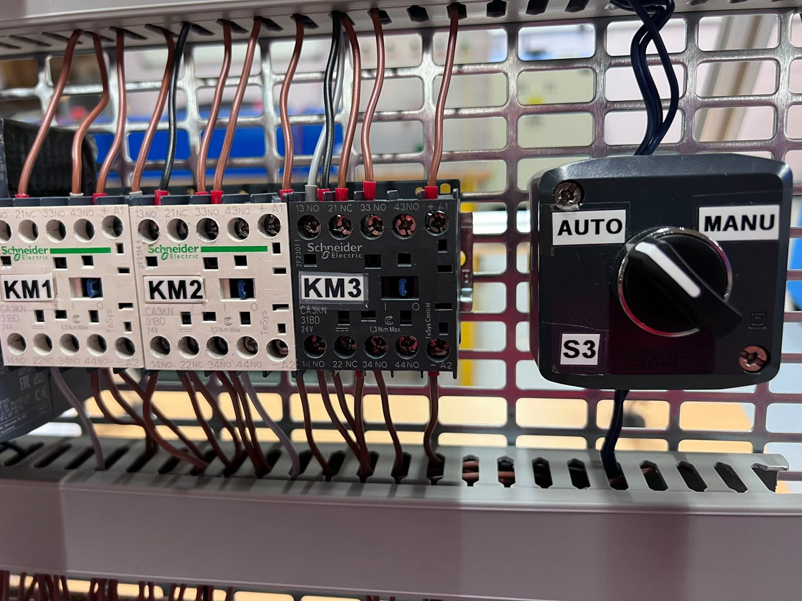
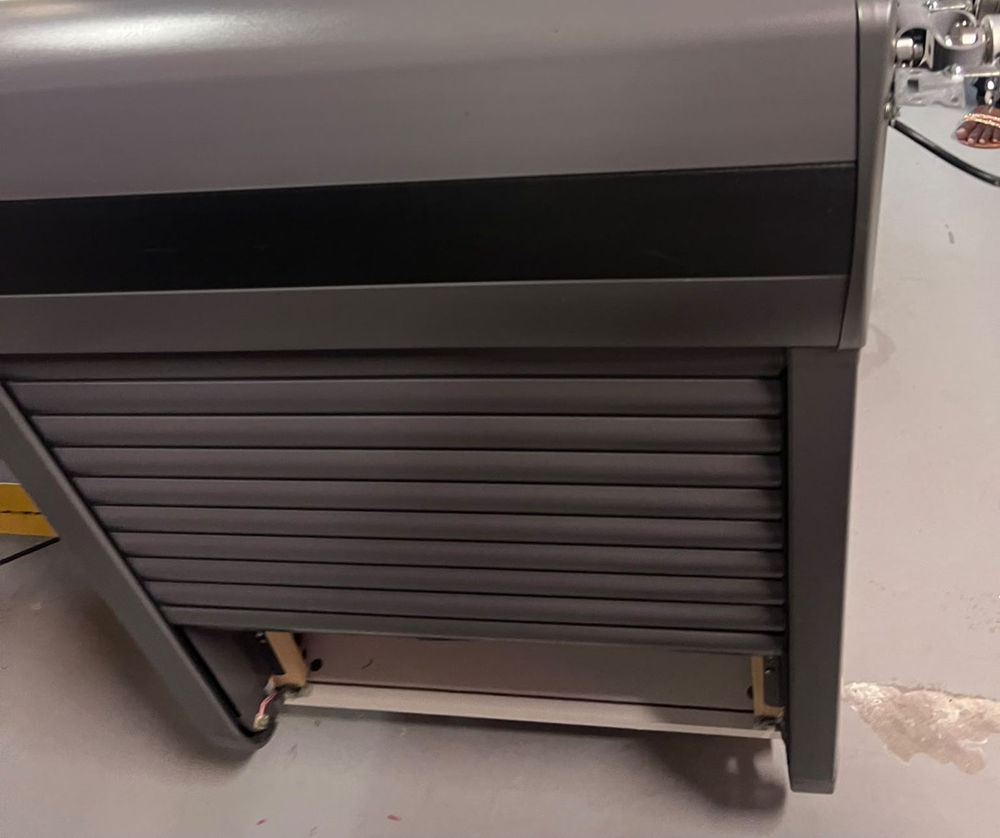
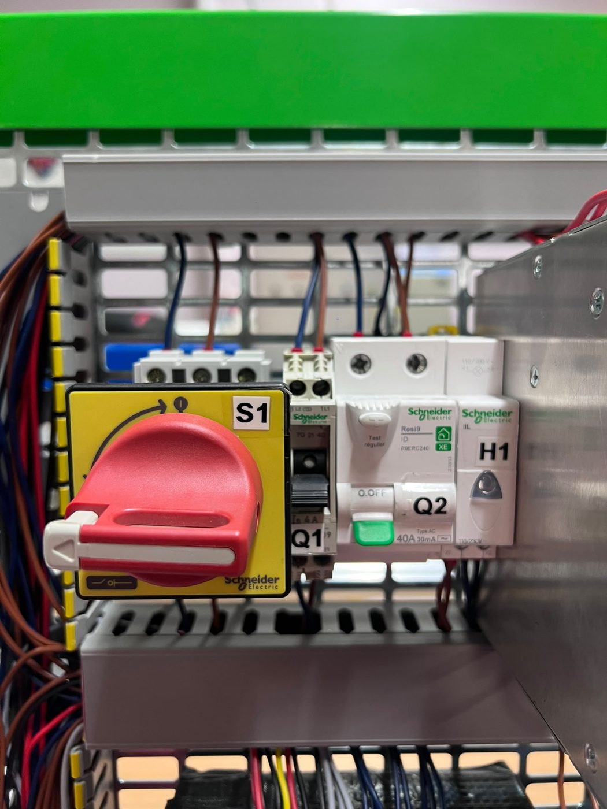
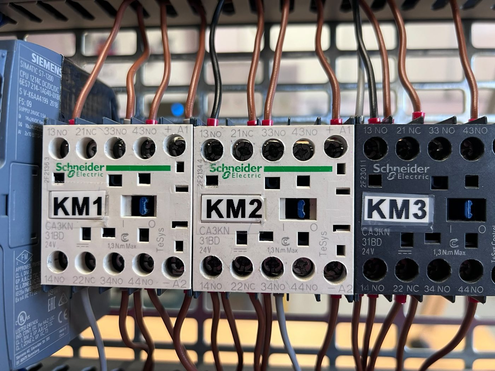
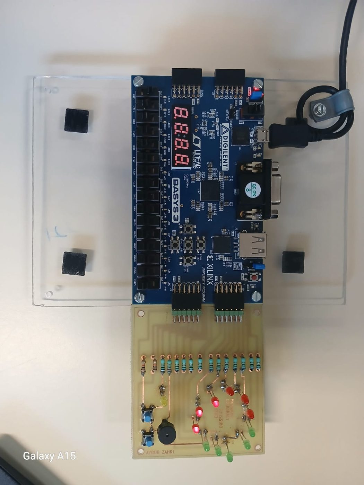
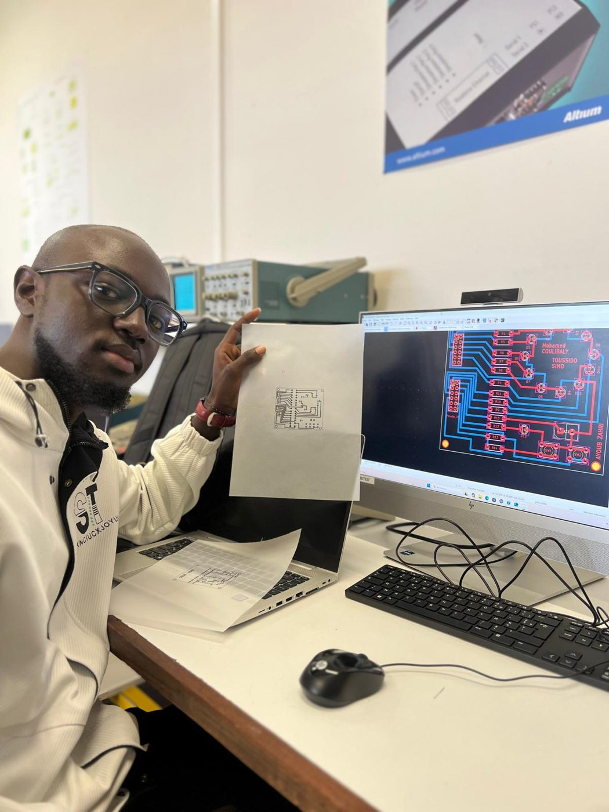

Projets
Trois projets menés à l'IUT : de la carte électronique à l'automate industriel.
Automatisation d'un volet roulant
Ce projet consiste à automatiser l'ouverture et la fermeture d'un volet roulant métallique avec un automate Siemens S7-1200. Le volet fonctionne selon deux modes : en mode automatique, il réagit à la vitesse du vent mesurée par un anémomètre ; en mode manuel, il se commande avec des boutons poussoirs. Dans les deux cas, les capteurs de fin de course et de présence d'obstacle sont pris en compte.



Les quatre phases
- Câblage du mécanisme. Armoire avec sectionneur, disjoncteur, différentiel, alimentation 24 V, automate, contacteurs, arrêt d'urgence et boutons de montée et descente.
- Chaîne de mesure de la vitesse du vent. Adaptation de tension, génération d'un signal PWM avec un NE555, comparateur à hystérésis (trigger de Schmitt), simulations sous LTspice et tests sur maquette.
- Microcontrôleur. Programmation de la carte Microchip Explorer 16 (PIC24) pour lire le signal de l'anémomètre.
- Automate. Câblage des entrées et sorties et programmation du Siemens S7-1200 sous TIA Portal pour une commande sécurisée du volet.
Ce que j'ai fait
- Conçu et réalisé le système automatisé de montée et de descente du volet.
- Mis en œuvre le système de commande des différents mouvements.
- Programmé le microcontrôleur PIC24 et testé chaque fonction.
- Diagnostiqué et corrigé les problèmes rencontrés pendant la réalisation.




Transmission de la vitesse du vent par RS232 En cours
Ce projet prolonge celui du volet roulant. Un microcontrôleur PIC24FJ128GA010 mesure la vitesse du vent avec un capteur analogique, l'affiche sur un écran LCD, puis l'envoie à l'automate programmable industriel par liaison série RS232 quand celui-ci la demande. L'automate décide ensuite d'ouvrir ou de fermer le volet.
Matériel
- Carte Microchip Explorer 16 et carte d'extension d'E/S
- Microcontrôleur PIC24FJ128GA010
- Capteur de vitesse du vent, de 0 à 30 m/s
- Automate Siemens S7-1200
Ce que je réalise
- Schéma de câblage et prototype opérationnel
- Projet MPLAB avec programmes commentés
- Interface sur l'écran LCD avec menu et sous-menu
- Choix du protocole RS232 et gestion de la demande de l'automate
Je mène ce projet en autonomie, de la programmation du microcontrôleur jusqu'au programme de l'automate.
Minuteur de cuisson d'œufs sur FPGA
Le cahier des charges demandait un prototype de minuteur à deux boutons : l'un démarre ou arrête le décompte, l'autre ajoute du temps. Six LED rouges valent 30 secondes chacune, cinq LED vertes valent 15 secondes chacune. Une LED jaune clignote chaque seconde pendant le cycle et un buzzer signale la fin.



Ma part du projet
- Conception du schéma électronique sous KiCad
- Routage de la carte
- Vérification de la continuité des pistes
En trinôme : analyse du cahier des charges, choix des composants, vérification de la carte et du prototype, dossier et oral.
Fonctionnement
- 3 minutes présélectionnées au départ
- Chaque appui sur le second bouton ajoute 15 secondes, jusqu'à 4 min 15 s
- Les LED s'éteignent une à une, puis tout clignote et le buzzer retentit
- Un appui sur le premier bouton remet le minuteur à zéro
Problèmes rencontrés et solutions
LED inversées. Plusieurs LED ne s'allumaient pas. Nous les avons testées avec une alimentation externe, puis replacées dans le bon sens.
Résistance défectueuse. Une LED restait éteinte. Après mesure, la résistance était en cause et nous l'avons remplacée.
Piste de masse coupée. Un test de continuité piste par piste a montré une mauvaise continuité, que nous avons réparée.
Erreur dans le schéma KiCad. L'alimentation des boutons poussoirs était sur le mauvais pin du connecteur JC. Nous l'avons corrigée sur la carte.